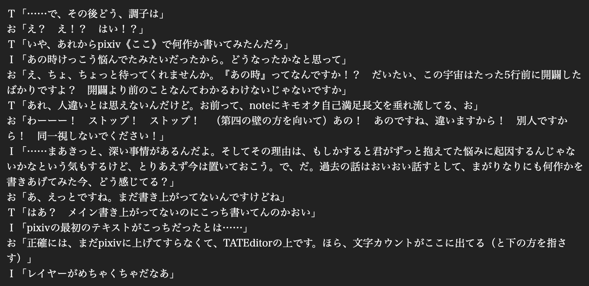

会話形式で内省記事を書いてみるテスト
＜登場人物＞
ａ：作者。頭おかしい人の別名義。
Ｉ：とあるセンターの職員。
Ｔ：とあるセンターの職員。
舞台中央にローテーブル。それを囲むように三つのパイプ椅子。
上手側の椅子二つは空席。下手側の椅子にａが座っている。
ローテーブルの上に、緑茶のペットボトルが一本。
ａの手には台本。
ａ、パラパラとページをめくったり考え込んだりしている。
ＴとＩ、上手奥から連れ立って登場。
Ｔの手にはカフェイン飲料、Ｉはミネラルウォーターのペットボトル。
二人とも小脇に台本を抱えている。
Ｔ、ａに気がついて片手を上げる。
Ｔ「よ、久しぶり」
Ｉ「三年半ぶり、かな」
ａ「あ、あっ、ど、どうも。ご、ご無沙汰してます」
ａ、椅子から腰を浮かせてヘコヘコと頭を下げる。
ＴとＩ、上手側の椅子に座り、ペットボトルをローテーブルに置く。
Ｉ、周囲をものめずらしそうに見回している。
Ｉ「というかPixivでは、初めまして……になるのかな？ 一応」
ａ「そうですね……、あちらからフォーマットだけ借りた二次的創作物という形にさせていただきました」
Ｔ「ややこしいな。何の二次創作だよ」
ａ「note記事の」
Ｔ「何なんだそれは」
ａ「あ、先方の許諾は得てますから」
Ｔ「そういう問題じゃないんだよ」
Ｉ「（考え込んでいたが顔を上げて）だとすると、僕らという存在のグレーさも、継承されてることになるね」
Ｔ「だな。むしろここだとタグつけてない分、厄介度が増してるまである」
Ｉ「ま、タグは義務ではないけど、今回も注意喚起はしておきますか、と。（第四の壁に顔を向け、毅然とした表情で）あー、前回と同様、僕らは既商業作品とは一切無関係ということで、そこんとこよろしく。なのでタグもつけてません」
Ｔ「つけられたらどうすんだよ。ここ、そういうシステムだよ」
Ｉ「その時はその時で。システム権限で消せるし、そもそもそんな蓋然性は極めて低い」
Ｔ「それもそうか。ま、だいぶ元の属性薄れてきたけどな、俺ら。ただの便利キャラになりつつある。（ａに）てかこれ何」
ａ「え」
Ｔ「何なんこの茶番形式」
ａ「あー。いやあ、その、前もやりましたよね」
Ｉ「うん、やったけど、やったけどさ。わかってんのかなあこの、痛々しさ全開なフォーマット」
Ｔ「いにしえの同人誌とかのあとがきで作者とキャラが延々フリートークするやつな」
Ｉ「しかも脚本形式、ときた」
Ｔ「嫌われる系要素役満なのわかってる？」
Ｉ「前にも言ったけど、メアリー・スー一歩手前だよね」
読んでいた人間の何人かがブラウザをそっと閉じて去り始める。
その後も三々五々、読者が減っていく。
Ｉ「ほら、貴重な読者がドン引きしてるよ。……ていうか嫌だなあこのセリフ。こういう痛々しいやり取りさせられるこっちの身にもなってくれ」
ａ「うっ……。ほんとすいません。まあ、最悪ブラバしてもらえばいいかなって……」
この時点で、ブラウザの前に残っているのは数名程度。
Ｔ「なんか前回よりずいぶん面の皮厚くなってないかこいつ」
Ｉ「だね。無敵の人みたいになってきた。困ったもんだな。（第四の壁に向かって）あー、いつでもブラウザバックしていただいて良いですよー。このあとどんどんひどくなるんで。……戻るなら今のうちです」
ａ「（第四の壁に向かって）ほんそれです、あの、これ、完全に自分用メモっていうかただの記録なんで。他人が読んでも全然面白くないんで」
Ｔ「んなもん載せるなよ」
ａ「ね、ほら、そろそろ読んでて居たたまれなくなってきたでしょう」
Ｔ「何がほらだよ」
ａ「ささ、どうぞ、あの。お出口あちらです」
残りの人間のほとんどもブラウザを閉じて去る。
現在、同接数、１。
タイトルコール。『脚本形式で内省記事を書いてみるテスト』
Ｉ「だいたい帰ったかな」
ａ「ああ、良かった。（ペットボトルのお茶を飲み）閲覧数増えると心臓に悪いんですよね」
Ｔ「何考えてんだよ。こんな、せっかく増えたフォロワーに冷水を浴びせるみたいなもの載せやがって」
Ｉ「期待して読みに来てくれたフォロワーには本当に申し訳ないけど……これさ、わざとやってるよね？」
ａ「うっ」
ａ、図星という顔をして、黙ってうつむいている。
Ｉ「……やっぱりな。フォロワーが増えて、彼らの目が気になってしまうからこそ、言い訳としてやってるんじゃないの？ こういうどうしようもないもの書く奴なんだって思わせて、期待値を下げるための」
ａ「いや、あの、それだけじゃないですけど……それも、ある」
Ｔ「悪質だな。その割には数日前にしれっとワンドロがアップされてるけど」
ａ「す、すいません……。ワンドロは完全に事故です。だってクリスマスイヴの夜なんかに、あんなに参加者が集まるとは思わないじゃないですか」
Ｔ「あれは主催者が鬼畜外道すぎるんだよ」
Ｉ「君はあのＴＬのノリの良さにもっと感謝したほうがいい」
ａ「まさか自分も書くことになるとは。おかげでこの原稿は先を越されまして」
Ｔ「何やってんだよ。ともかく、Ｃ１０３までにさっさとアップしてしまったほうがいい。例の合同誌のあの超豪華執筆陣、見ただろ。読んだら最後、ここのアカウント削除して夜逃げしたくなるだろうから。あの布陣はマジでヤバい」
Ｉ「まあ、気は強く持て。……で、だ。さっき、それだけじゃないとは言ってたけど、どういう意味？ バレたから言い訳的な？」
ａ「あ、その、違うんです。バレた云々とかは関係なくて、この企画は前からやろうやろうとは思ってて。ほら、昔書いてた原稿です」
ａ、TATEditorの下書きを二人に見せる。

Ｔ「ああ、当時はまだTATEditorで書いてたんだっけ。……って、はあ!? ２０２２年１月？」
Ｉ「最初にPixivに作品アップしたの９月だよね？ まだ一作も書いてない段階でこれ書いてたの!?」
Ｔ「バカすぎる」
Ｉ「内容もバカすぎるな……」
ａ「ほら、よく本編より先にあとがきのほう書きたくなったりするじゃないですか」
Ｔ「ならねーよ」
Ｉ「まだａじゃないんだ」
ａ「あの頃はまだ立ち位置はっきりしてなくて。……で、さすがに先に、作品仕上げることにしました」
Ｉ「思い直してくれて良かったよ。しかしねえ、なんでまたこれを。そんなに気に入った？ この厨二病フォーマット」
ａ「それは……、前にこれやった時なんですけど、何ていうかな、その、ええと」
ａ、ペットボトルの緑茶を一口飲み、虚空を見つめて続ける。
ａ「あの時、なんかものすごい恍惚感みたいなのを感じてしまいまして」
ＩとＴ、呆れて顔を見合わせる。
Ｔ「…………大丈夫かこいつ」
Ｉ「…………確かにあの時は、明らかにテンションヤバかったな」
ａ「脳汁出まくるっていうのかな。とにかくなんか異様に楽しくて仕方なくて、それが忘れられなくて。あの境地をどうしても、もう一度、味わいたくてですね」
Ｔ「（虚無の顔で）はあ」
Ｉ「で、今はあの境地を味わえてるの？」
ａ「いえ、まだ達してないです」
Ｔ「あかんやん」
ａ「……いや、そもそも、それ以前に、二次創作がかつては苦手だったっていう話から説明させてください」
Ｔ「なんだい、藪から棒に。……長くなりそうだな」
ａ「はい、長くなります。すいません。（居住まいを正して）ご存じと思いますが、自分は二次創作って全然今まで縁がなくて、というかむしろ苦手で避けてきたところがあって。原作が個人の思い込みで好き勝手に改変されるのになんかもやもやするというか、キャラＳＳなんかはどうしてもコレジャナイ感を感じてしまってまったく楽しめなかったんです。特に他人が書くものは」
Ｉ「ふうん、『他人が書くものは』ねえ……。ということは自分でやっぱり書いていた？」
ａ「ぐはっ……。そんな、言葉尻を捉えないでください……。中二の頃、見よう見まねで数ページ。でも、自分でも何か違うなと思ってすぐにやめたので、書いたうちに入らないです」
Ｉ「なるほど、自分で書いた二次創作にすら違和感を感じていたと」
ａ「はい、今以上にスキル不足で思うように書けなかったのも大きいんですが、わりと原作至上主義だったのかもしれません。こういうことを言うと語弊があるかもですが、二次創作をちょっと馬鹿にしてたところがありました。読みもしないのに。二次創作というものの大変さを知った今となっては、蒙昧無知すぎて恐ろしいですけど」
Ｉ「まあ、二次創作って結構特殊な世界だからね。読まない人はほんとに読まないし、読む側にも慣れが必要なんだよ。で、それがまた一体どういう風の吹き回しで」
ａ「ある劇場アニメ作品にハマっていろいろ情報を集めている時に、たまたま、ある二次創作作品に触れたんです。記憶が怪しいですが、たぶん、きっかけはｓ○○さんの作品だった気がします。普段だったらスルーするんですが、書き出しに惹かれてついページを開いてしまった」
Ｔ「あー、こんな怪文書に名前書かれたら迷惑だろうから一応伏せといたわ。気休めだけど」
ａ「助かります。（第四の壁に向かって）任意の文字を代入して夢小説としてもお使い頂けますので！」
Ｔ「そんな需要ねえよ」
Ｉ「……そして、圧倒されたと」
ａ「はい。……なんだこれって思いました。こんな二次創作があるのかって。一種の考察でもあるんだけど、考察という形態が絶対に突破できない壁を超えている。圧倒的にロジカルで、なのに圧倒的にエモい。こんなやり方あるんだっていう。うまく言えないんですけど」
Ｉ「語彙力……」
Ｔ「あとお前もう少しミステリとか読んだ方がいいと思うよ」
ａ「他にもイ○○○○さんとかさ○○○さんの作品にもやられてました。どちらも地域考証をガチガチにされつつエモい話を書かれる方で。それからなんといってもサークル『か○○○○○』さんの作品群です。もうこの人達、野○○○先生のゴーストライターになれるだろっていうくらいの。特に井○○○さんや沖○○の作品にぶん殴られて。別の意味で、こんな二次創作があるのかって」
Ｔ「だんだん伏字が機能しなくなってきてるが許せ」
ａ「あれで、二次創作に対する固定観念が完全に崩れたんです。ただ、それでもまだ読む習慣はつきませんでしたし、書くほうはなおさら考えもしなかった。だけど、さっきも言いましたけど例の脚本形式の記事書いた時に、変な恍惚感に出会ってしまって……。こちらが考えもしなかった台詞をお二人が脳内でしゃべり出して、手はそれを自動筆記し始めて、え、なんだこれ、何この状態って」
Ｔ「まあ、確かにあの時は作者が使い物にならなかったから、俺が勝手にしゃべってたような覚えはあるけど」
ａ「地の文もないお気楽フォーマットだからってのもあるんですが、なんかちょっと……ものを書く楽しさというか、昔を思い出してしまって」
Ｔ「ああ、前にどっかに書いてた黒歴史のことか。ハロワ見て成仏したっていう」
ａ「うっ、その話はやめてください」
Ｉ「でも、楽しかったんだよね？ 当時も。一次ではあるけど」
ａ「そりゃ、まあ」
Ｔ「小学校に上がる前から嬉しそうに薄い本量産してたしな」
ａ「誤解を招く言い方やめてください。……ともかくそのあたりから、ワンシーンが地の文の形でまるまる浮かんで思考の邪魔をするようになって、それらを書き留めてプロットのネタ帳を作り始めたのが２０２０年の９月」
Ｉ「あれ、意外と早い時期からやってたんだ」
ａ「映画公開一周年で大量に二次創作が出てきて触発されたっていうのはあります」
Ｉ「でも最初の作品は２０２２年の９月。……二年間、迷ってたわけだな」
ａ「……はい。まあ、そうなりますね」
Ｉ「……前回、君はすごく恐れていたよね、僕らにキャラ付けすることも、オリキャラを創造することも。まあ、だからこそ僕らが呼ばれたんだろうけど」
ａ「ご指摘のとおりです。公式のあの完成された世界を自分なんかが勝手にどうこうするなんて、やっぱり、めちゃくちゃおこがましいことだと思っててですね。作品世界に自分が干渉したら、もうそれは全然違う何かになってしまう。似て非なる物で」
Ｉ「楽しかったとは言ってたけど、前回のあれを書いてる最中は実際かなり辛そうではあったよね」
ａ「あっ、はい、楽しいのにめちゃくちゃ辛い。二つの感情の板挟みで、その後もずっとなんだったんだあれって思ってました。今思えばあの辛さの原因は、考察記事との相性の悪さも大きかったです」
Ｔ「考察と創作って、頭の使い方全然違うからな」
ａ「だからこそ、考察と創作をうまく融合されてる方々がほんとにうらやましいんですよね。自分にはできない芸当で」
Ｔ「今は？ 辛さは吹っ切れたの？」
ａ「吹っ切りました。無理やり。最初の作品書いてる時とかは、あえてキャラ崩壊系の違和感ありまくりの作品を読んで『自分のはこれよりは原作に近いだろう』と勇気をもらうとか」
Ｔ「ずいぶん失礼な奴だな。キャラ崩壊系は、あれは高度なテクニックが要るんだからな。初心者が真似できるもんじゃない」
Ｉ「あと、原作が多世界モノや並行世界モノだと、ｉｆ作りやすいから便利ってのはあるでしょ？」
ａ「それはかなりあります。完全に〝こういう世界もどっかにあるんだよ〟的ロジックで自分を騙してますね。でもまだＢ世界とかはやっぱり怖くて直接書けないです」
Ｔ「だからかー。だからハロワネタはだいたい変な設定なのか」
ａ「何かしょうもないギャグに逃げがちですね……。ほぼ出オチで撃沈してます」
Ｉ「作品世界そのままで書く勇気がないから別の世界の話にしがちってことか。情けないやつだな。だからオリ設定が必然的に多くなるわけだ」
ａ「ですね。でもオリ設定もあれはあれですごく怖いんですよ。……わかりますか、自分なんかが造物主になって世界や誰かの人生を一から作ることの怖さ」
Ｔ「一次創作なんてその塊だぞ」
ａ「はい……。一次創作は永遠に憧れるんですが、あれはやっぱり自分には無理で。まあ、この話はあとでもう一度させてください」
Ｔ「いいよしなくて」
Ｉ「それにしても、最初は主人公の後輩を一瞬出すだけでもへっぴり腰だったのが、京大のクラスメイトあたりで開き直った感あったね」
ａ「はい、Ｅ子さん回はかなり意識して、自分の苦手だった部分に斬り込みました。ただ、名前をつける勇気はまだなくて、それでかえって自分の首を絞めてますね。まあＥ子さんも名前ないから、釣り合いは取ったつもりですが」
Ｉ「あ、Ｅ子さんって呼び方、普通、通じないからね。スピンオフアニメの２話に出てくる猫好きの同級生、とでもしないとわからないし、そもそもあのスピンオフを見ている人自体、すごく少ないから。……まあ、ここではＥ子さんでいいけど」
Ｔ「だけど仙波はやりすぎだろ。あれ、仙波ファンから刺されるぞ」
ａ「（うなだれて）すいません、仙波君ほんとすいません」
Ｔ「だいたいさあ、作品で自分語りしすぎなんだよ」
Ｉ「自己を投影したキャラしか書けないのは、君の大きな欠点だね」
ａ「それは自覚してます……。全員、完全に自分なんですよね、ああああ、めちゃくちゃ恥ずかしくなってきた」
Ｔ「ただ、まあ妙に神経が図太くはなってきた感じはするな。身勝手な造物主としての自覚ができてきたというか」
ａ「それはあると思います。一種の割り切りと言いますか。でもそれまでは本当に怖くて。——ていうか、書き始めた頃、もちろんオリ設定も怖かったんですが、ストーリーテリングという行為自体にもすごく暴力性を感じて、どうしたらいいんだろうと思ってたんです」
Ｉ「読者あってのストーリーだからね。本質的に、僕ら登場人物には自由意志なんてない」
ａ「はい、創作者って神よりタチが悪いなと以前から思ってまして。作劇のためなら何だってやる。読者を楽しませなければならないという至上命題があるから、起こる出来事、登場人物の行為、すべてに作為が入る。最初の頃、それに気づいてすごく恐ろしくなったんですよ」
Ｔ「作者のさじ加減一つで死んだりするってこと？」
ａ「いや、それ以前の問題です。たとえば」
ピロン。
スマホの通知音が鳴る。
ａ「最初に書いた作品に、こんな感じで通知が鳴るシーンがあるんです。でも、このエピソードは何とか後半に盛り上がりを作らなくてはと思って、書きながら無理やりひねり出したものなんです」
Ｉ「確かに最初のプロットにはなかったよね。オチも何もなくて、さすがにこれじゃ小説の体をなしてないと思ったと」
Ｔ「でもそのひねり出したオチも、取って付けた感満載のひどいもんだけどな」
ａ「そうなんです。作品世界内では、ここで通知音が鳴る必然性がない。なぜ鳴ったのか？ 自分がオチを作らなきゃと思ったから、が答えなんですよ。物語の始めと終わりで、主人公の心境になんかこうプラスの変化をもたらしたかったから。それが定石だから。そんな打算的な理由で、この世界では本来起こらなかったかもしれない事象が、あっさり起こってしまうんですよ。ねえ、なんなんですかこれ。ヤバすぎですよ」
Ｉ「うーん。せめてもう少し上手く伏線でも張っておけば、必然性を作品世界の中に帰結させることもできたかもしれないけど、この頃はまだそんな余裕はなかったよね」
ａ「はい、もうオチをひねり出すだけでもいっぱいいっぱいで……。他にも例えば、雨のシーンがあるんですが、これも何となく陰鬱な雰囲気を読者に与えたいなあという理由だけで雨が降るんですよ。自分で書いててなんですが、そんなことで雨が降っていいのかと衝撃を受けました」
雨が降ってくる。
三人、あわてて台本が濡れないように抱きかかえたり、体を丸めたりする。
Ｉ「あっ、何してんのおい、やめて。雨やめて。ここ舞台。屋内だから」
雨がやむ。
Ｔ「……何やってんだよ。でも、創作物ってそういうもんだよ。理不尽と暴力の塊だ」
ａ「いや、雨ってそういう理由で降るもんじゃないでしょう。もっとこう気象条件がどうとか、湿度がなんとかで雨雲ができて雨が降るのが普通じゃないですか。今の雨だって」
Ｉ「それは誤解だよ。君は現実と虚構が等価だと思っているのかもしれないけど、そうじゃない。……作品内のすべての事象は、作者がそこに在れと命じたから起こる。それは雨が降る物理的メカニズムよりも上位だ。作者がそれを描いた瞬間、因果律を遡って雨を降らす気象条件が構築される。もしそこに作為や違和感を感じたとしたら、それは作者の技量が足りてないせいだよ」
Ｔ「あの取って付けた感も、そのせいだろうな」
ａ「なるほど……。そもそも最初のあの作品は『ネタ帳の中で一番無難そうなもの』を選んだんですが、無難だから書きやすいかと思ったらそうでもなかったという。無難ってむしろ難しいんですね」
Ｔ「そんな理由で選んだのかあれ」
Ｉ「ふつう、最初の作品って、どうしても書きたい話があって衝動的に書いたってパターン多いと思うんだけど」
ａ「そうですね……。何かを書きたいという衝動はありましたが、特にあのプロットというわけじゃなかった。むしろ、本当に書きたい内容を今書いてもうまく書ける気がしないから、まずは数こなしてスキルを磨こう、という気持ちで書いたのがあれです。最初だし、あえてオーソドックスに主人公が出てくる感じで行こうかと」
Ｔ「話に勢いがなかったのはそういうことか。性に合わないものをちょっと無理して書いてる感はあったよな、あれは」
ａ「やっぱバレてましたか。というか、えっと、その……。自分にとってこの活動は、一種の実験なんです」
Ｉ「実験ねえ。何の？」
ａ「目的は……三つありますね」
Ｔ「そんなにあるんかい」
ａ「一つ目は、二次創作が苦手な自分が、二次創作を書いてみたらどうなるだろうか、という実験。実は、今でもキャラＳＳとかはちょっと苦手意識があります。一方で、すごい二次創作を書く方々に出会って感銘を受けた。この現象は何だろう、と。二次創作の何が、自分に苦手意識を抱かせたり、感銘を覚えさせたりするのだろう。自分で書いてみることで、何か見えてきたりしないだろうかっていう」
Ｉ「まあ、何でもやってみて初めて見えてくる景色ってあるからね」
ａ「二つ目は、考察では扱えない領域に踏み込んでみたらどうなるか。作品世界の考察って、作品内の情報だけから導き出せるとすごく強いんですけど、どうしてもそれだと限界がある。あるところから先は、妄想にならざるを得ない。仮定に仮定を重ねた考察は面白いものも多いし、もちろん否定する気はまったくないんですけど、やっぱり数多の仮説の一つでしかない」
Ｔ「あー、たとえばあの映画のラストがなぜああなってたかとか、あの手のやつな」
ａ「はい。作品内に材料が足りないと、妄想を積み重ねるしかない部分が出てくる。もうそれは、二次創作の範疇になってくる。あちらの名義では〝語り得ないもの〟として沈黙するしかなかったそういう部分を、仮説であると認めたうえで、語れるプラットフォームがあっても良いかな、と思ったんです」
Ｉ「考察と妄想を分けたかった、ということか」
ａ「まあ、厳格な線引きは難しいんですけどね」
Ｔ「志が高いのは認めるが、それ、結構ハードル高いぞ。いまだにまともにやれてないだろ」
ａ「はい……。最近はもう自分には無理だなと悟って、諦めてお気楽路線に行きがちです」
Ｔ「志が低いな」
Ｉ「まあ、普通の考察自体も不得手だし、その芸風はあまり向いてないとは思うよ。あっちの名義でやってることも、人様の考察を寄せ集めて分類してるか幻覚を書き連ねてるだけだから」
Ｔ「とはいえ、シリアスはつまらないしギャグは寒いしキャラ芸は書けないし、詰んだなあ」
Ｉ「その結果がこの地獄のようなテキストか……」
ａ「で、最後は……そもそも創作の適性がまるでない人間が、どこまでやれるだろうっていう実験です」
Ｉ「適性……ね。どっかに書いてあったトラウマの話か。小三の時の」
ａ「ぐはっ……。さすがですね。ここでは詳しくは書かないですが、あの日、自分に創作は向いてないということを思い知らされて、ずっとそれを痛感しながら生きてきました。その認識は今でも変わってません。自分にはオリジナルな何かを創造する能力が著しく欠けている。相変わらずオチは何も思いつかないし、頑張ってプロットを立ててみても面白さからは程遠い。小説に限りません。すべてにおいて、です」
Ｔ「もしかして、二年迷ってたってのは」
ａ「はい、一番の理由はこれです。迷ってたというよりは、諦めてた、が近いかな。忙しいとかいろいろ理由を自分の中でつけてましたけど、やっぱり創作って自分がやれる気がしなくて。特に自分の周辺は本当に卓越した字書きさんが多いので、ますます彼我の差を思い知らされてました。自分にやれるわけがない、と」
Ｉ「うん、それは前回からうすうす感じてたよ。……でだ。その諦観を打ち破るほどの何かが２０２２年にあった。そういうことだよね？」
ａ「はい。きっかけは……○○○○先生でした。○○○○先生の作品のパロディを冒頭だけ書いて、おふざけでスクショを載せたらまさかの○○○○先生と編集の○○○○先生に見つかって、ぜひ公開してほしいと言われてしまいまして」
Ｔ「うわ、怖ぇー……。全部伏せるわ」
Ｉ「いや、さらっと言ってるけど、これマジで○○○○先生と○○○○先生が寛大な方々だったからいいけどさ。著作権的なアレでいうとヤバいから。訴えられたら終了だから。いやほんとお二人には感謝しないとダメだよ」
ａ「ですよね……。気をつけます。でもこの時、○○○○先生がこんなことをおっしゃったんです。『人生で初めて二次創作されそう。やったあ！』って」
Ｔ「なんつーホラーだよ」
Ｉ「胃に悪いな。……でも、ああ。『やったあ！』……か。ありがたいな。とはいえあの時点では、内容を知らないからこそ期待してくれていたのかもだけど」
ａ「まあ一応その後『二次創作で良いかは定義によるか』ともおっしゃっておられまして、それに自分もそれまではこれが二次創作っていう意識は全然なかったんです。小説じゃないし、ただのレポートだし。というかあっちでは一応そういう扱いにしてます。プラットフォーム的にも。……だけど」
ａ、ペットボトルのお茶を一口飲む。
ａ「あ、これ、二次創作って捉えることもできるんだって、その時初めて思ったんです」
Ｔ「……まあ、二次的著作物ではあるのかもな」
ａ「二次創作なんてずっと無理だと思ってて、苦手意識もあったのに。なんだ、知らない間に書いてたってことじゃん。これが二次創作と言えるのなら、自分でも書けるってことじゃん。そう思ってしまった」
Ｉ「うーん、まあ、なるほど」
ａ「で、書き上げた原稿を○○○○先生に見て頂いて、正式に許諾をもらって公開しました」
Ｔ「ぎゃあ、さっきからほんとに恐ろしいことしてんな……。これだから自覚のないバカは。それ絶対他でやるなよ。絶対だぞ」
ａ「はい、いや、ほんと、危ないことしてたなと思います。先生方には感謝しかないです」
Ｉ「その結果があれか」
ａ「一応あっちの名義では二次創作扱いにはしてないのですが、見方によってはあの名義で書いた最初で最後の二次創作、と言えるかもしれません。で、なんかその過程でいろいろ背中を押されて、ひとまずやってみようかと思って、こちらの名義でも一作書き上げて、映画公開三周年の日に公開しました」
Ｉ「めちゃくちゃな経緯だなあ」
ａ「書いてる途中でちょうど『夏トン』を見て、変なふうに刺さったってのはこのことだったりします」
Ｔ「携帯の件？」
ａ「はい、もちろんそれもあります。でも、ヒロインの心情も刺さってしまって。何かを書いてた時だったからこそわかってしまうというか」
Ｉ「あー、あれね。うん、まあ、こちら側へようこそ。ってことで」
ａ「ちなみに映画公開二周年までは誰かしらが二次小説を当日発表しておられたので、戦々恐々としてたのですが、三周年はまさかの前日に井○さんが新作出されて打ちのめされて、満身創痍で迎えた当日は結局自分ひとりで、拍子抜けした記憶があります」
Ｔ「前日の井○さんに注目が集まったことで当日は誰にも注目されずに済んだし、幸先いいスタートだったと思うぞ」
Ｉ「誰にも読まれないほうが気楽にやれるタイプだしね。で、調子に乗って『僕愛君愛』の二次小説も書いたと」
ａ「はい。しかも映画公開日なのに、小説のほうに準拠した、映画にないシーンで書くっていう」
Ｔ「アホすぎだろ」
ａ「しかも濃度有限って書いたら、そのわずか数時間後にｓ○○さんから濃度は非可算無限だっていうアンサー作品が来て凹みまくるという」
Ｔ「なんかその手のエピソード多いな」
Ｉ「迎撃システムが毎度ピンポイントすぎる」
Ｔ「しかも先方に多分迎撃の意思もアンサーの意思もないからな。お前が勝手に迎撃されただけで。たぶん、読まれてすらない」
ａ「ですよね。ただ、その後、一条さんをいきなり紹介頂いてしまって、あ、これはバレたなっていう……」
Ｔ「バレてねーよ……かすりもしてねーわ。何食ったらそういう思考になるんだよ」
ａ「オチといい、他のネタといい、誰が読んでも確実にバレると思ってました……。あと、○○の二次創作『も』されていたんですね、っていう所とか……」
Ｔ「認知の歪みが激しすぎる。お前マジで、パクリクレーマーと思考回路がほぼ一緒だから本当に気をつけろ。相手が自分のことを知ってるとか、作品を読んでるっていう思い込みな。いやほんとに洒落にならないからな」
Ｉ「かなりドン引きしたよね、あの時は」
Ｔ「いつかやらかして炎上しかねないから、これはもう、本当に肝に銘じた方がいい。これで他人に粘着でもしたら目も当てられない」
ａ「（しゅんとして）……はい。自分でもそれは痛感しました。気をつけます」
Ｉ「……この件はひたすら鬱になるから、僕愛君愛の話に戻ろうか」
ａ「（早口で）はい、あの時は、映画公開直後ってこともあってPixivのブクマが10件越えっていう恐ろしい数字叩き出したんですけど、あれ実際ほとんど読まれてないと思うんですよね。読了時間約20分って書いてるのに、アップして２分くらいで何件かブクマついて。絶対読んでないだろこいつって思ってから基本的にブクマ信用してないです。９割減くらいで換算してますね」
Ｔ「さっきのしおらしい態度はどこに行ったんだよ」
Ｉ「相変わらず痛いなあ。まあ、実際〝後で読む〟的な意味でブクマする人も多いし。てかブックマークって、本来そういうことだしね」
ａ「でも永遠に読まれないんですよね。ええ、知ってます。ていうか、自分の作品がラストまで読まれたケースって延べ数件くらいだと思ってます。９割方、途中で読むのやめてると思う。なのでオチに言及されると『最後まで読んでくれただと……』って、感謝と畏怖で情緒ぐちゃぐちゃになりますね」
Ｔ「途中飽きてすっ飛ばしてオチだけ読んでるのかもしれない」
ａ「洒落にならない冗談やめてください。でも、確かにそうかもしれない……。きっとそうですねえ……」
Ｉ「でもそのオチもね……弱いんだよねえ。小三の時のトラウマは結局解消してない」
ａ「ううっ……。未だにオチに毎回四苦八苦してます。さすがにもうあんな禁忌は侵してないですけど。ま○先生みたいにオチから逆算して作れるようになりたい」
Ｔ「出オチばっかだしな。プロット決めずに勢いだけで書くからそうなる」
ａ「一応、反省はしてて、Ｅ子さんのあたりからそれなりにプロット事前に作るようには、して、みま……した……（だんだん小声になっていく）」
Ｔ「ああ、あの読者騙したかっただけの話ね」
Ｉ「書き方が悪すぎて、読者が騙されたままになってたからねあれ。三人しかいない貴重な読者の二人の誘導に失敗するって相当だと思うよ。ゆ○さんほどの、作品世界を深く理解しておられる方にきちんと伝わらないって、もう世界の誰にも伝わらないから猛省したほうがいい。ｓ○○さんが○○トリックと受け取って下さって救われたけど、あれはたまたまめちゃくちゃ訓練された読み手だったというだけだから」
ａ「うぅ……。四箇所くらい念押ししたつもりだったんですが……」
Ｔ「お前だってさ、人の作品読むとき、かなり流し読みしてるだろ？ 頭に残るのはせいぜい一、二割だよ。誰も真剣に読むわけないんだから、あざといくらいにしないと伝わらない。大体、細かすぎて伝わらないネタが多すぎるんだよお前は。乙○先生のサインとか、Ｅ子さんの実家の飼い猫とか」
Ｉ「ミスリードに失敗して、読者を不必要に悲しませてしまったりもしてたよね。読者を騙すのはいいけど、騙された側の思考エミュレートが全然足りてない。人の心を想像できないのに心情描写ができるわけがない」
Ｔ「お、珍しくグイグイ来るね。よほど目に余ったか」
Ｉ「うん、あれはちょっとね。言っておきたかった」
ａ「ああ……、やっぱりそうですよね。意識したいと思います」
Ｔ「や○○さんも、読者目線でわかりにくいところを教えてくれてたしな」
ａ「あれはめちゃくちゃありがたかったです！ マジでああいうの通年大募集です」
Ｔ「お前には手が届かない一次創作を見事にものにしてる人の意見だ。ダメ出ししてくれる友人は本当に貴重だ。大事にしたほうがいい」
ａ「ですね……。おかげさまで痛感しました。シーン冒頭の５Ｗ１Ｈとか、登場・退場系、ひっくり返した後のたたみ方は要注意だなと」
Ｉ「うん、そういうのがしっかりして初めて、○○トリックも機能するからね」
Ｔ「だが、フィードバックを求めすぎるなよ。他人の作品を読むだけでも大変なのに、感想を返すのってものすごく気を遣う行為だからな」
Ｉ「基本、無反応だと思っていたほうがいい」
Ｔ「フォロワーにもこれ以上無理はかけられないだろ。結局は自助努力しかない」
ａ「はい、頑張ってみます……」
Ｉ「結局、創作って読者に届いてなんぼなんだよね。バックグラウンドの違う他人に対するコミュニケーションの一種。会話と違ってユニラテラルだから、ハンドシェイクも誤り訂正もできない、一度限りの通信路。だからこそ、エラーをできるだけ排するための先人の知恵が、作劇のセオリーには詰まっている。だから、そのためにもプロットを作るのは良いことだと思うよ。作らずに書いてたらもっと大惨事になってた」
ａ「それはそうだと思います。……だけど大体、事前にプロット作っても、書いてるといつの間にかキャラが、こっちの思ってもみない行動し始めるんですよ……。眼鏡君の言動とか完全に予想外で、『は？ 突然何してんだよお前』って思いながら書いてました。どうすればいいんですかね」
Ｉ「あー、そうか、君は論理的思考が苦手なタイプだからなあ。いくらプロットが大事とはいえ、ガチガチにプロット決めて書くのも、たぶん向いてない。……ってこの台詞がまさにそれだな。僕らの会話見ててもわかるだろ？ 主張がまるで一貫してない」
Ｔ「特に今回の原稿はいつも以上に適当だからな……。職業作家だったらそれじゃダメだけど、まあ趣味の活動だから、そういうものだと思って書くしかないんじゃないかな」
Ｉ「それに、そういうのが——書いてる時に、自分の思考の埒外にある何かが突然降ってくる瞬間、それが楽しいから、書いてるんだろ？」
ａ「あ、はい、そうです……。何かワンフレーズとかアイディアがどこからともなく降ってきて、それまでしっくり来なかった作品内の論理展開や伏線が全部つながった（ような気がする）ときの、うおおおおおおって感じが、ほんとに好きで。それを味わいたくて書いてるのは確かです」
Ｔ「相変わらず行き当たりばったりなやり方してんなあ」
Ｉ「それもひとつのモチベにはなるからね。とはいえ、だからというわけでもないけれど、肝心のストーリーが面白くないというのは、わりと致命的ではあるよね」
Ｔ「それな。いくらテクニックを学んでも、話が壊滅的に薄っぺらいし、人間が書けてない」
ａ「うう、そうなんですよ……。だから『ミウ』の彼女には、なんだか勇気づけられまして」
Ｔ「おい、勘違いするな。あれは、面白い話は思いつけないけど、文才とスキルは新人賞総なめレベルだからな。立ってる場所がかなり違う」
Ｉ「まあ『ミウ』には遠く及ばないけど、複数の方から、文章力はそこそこあるとか読みやすいと言ってもらえたことはある。これはこれで、とてもありがたいことだと思うよ」
Ｔ「いやあ、どうだろ……。文章力あるかなあ、これ。難しい言い回し覚え立てのイキった中学生みたいな文章じゃん。自分に酔ってるだけの。Ｔ○○さんとかの流れるような文章からもっと学んだほうがいいよ」
Ｉ「逆に言えば、君の作品は話の面白さより読みやすさのほうが印象に残りやすい、逆に言えば文章以外は印象が薄いってことだ。本当に面白い作品に出会った時って、文章の巧緻なんて吹き飛んじゃうからね」
Ｔ「ああ。読みやすい、イコール、するするっと読めて何も残らないってことでもあるからな。引っかかりを持たせるのもテクニックだし」
Ｉ「言い回しも話の展開も、だいたいワンパターンなんだよねえ……。ガツンと頭を殴られたような、とか、手垢のついた言い回しが多すぎる」
ａ、ガツンと頭を殴られたような顔で聞いている。
Ｔ「Novel Supporterで警告出るやつな」
Ｉ「毎回、誰かしら声が震えてるよね」
Ｔ「西野カナかよっていう」
Ｉ「伏せなくていいのか」
Ｔ「このくらいはまあいいだろ」
Ｉ「〝草いきれ〟とか」
ａ「（口をパクパクさせながら）あ……。う……。それは黒歴史へのオマージュのようなものでして……」
Ｔ「ああ、いいよいいよ、それ以上話さなくていい。成仏しなさい」
Ｉ「だいたいどれも、誰かに何かを託そうとする話。で、それが何となく相手に伝わるって話に収束するよね」
ａ「す、すいません……。今後書くやつもだいたいそれになると思います……」
Ｔ「まあ、好きなんだろ？ いいよ。またこれかって思うだろうけど」
ａ「あうう、でも……そうなんですよね。結局面白い話が書けないって話に戻ってくる。面白い話って、どうすればよいんでしょう」
Ｉ「うーん、そうだなあ。文体や文章力、プロットの立て方とかは鍛えればある程度の上達は見込めるとは思う。実際、書き始めの頃よりはほんの少しマシにはなっているからね。でも、面白い話を思いつく能力、これはどうなんだろうな」
Ｔ「これも鍛錬のしようはあるのかもしれないけど、恐らく一朝一夕でやれるものじゃない。死ぬ気で頑張る必要がある。そして、こいつはどうやら、何の努力もするつもりがない。ただ、己の適性のなさのせいにして逃げてるだけなんだよ」
Ｉ「だね。どうすればよいんでしょう、なんて言ってる時点でダメだなこりゃ」
ａ「…………」
Ｉ「さっきも言ったけど、趣味でやってるんだから、そこを追求しない生き方もあるとは思うよ。本人は一生、コンプレックスを感じながら生きていくだろうけど、読んでもらうことよりも書くことの楽しさのほうに重きを置いているみたいだし。うっかり読んでしまった読者の方にはお気の毒と言うしかないけれど」
Ｔ「そうだな。まあ、なんだ。がんばれ」
Ｉ「逆に、自分の特色を伸ばすことを考えたらどうかな」
ａ「自分の特色……。なんだろう。話が超絶つまらないとかプロットが意味不明とかクソ長いとか内省しかないとかキャラが立ってないとか原作破壊しがちだとか」
Ｔ「その話はもうしただろ」
Ｉ「大変ありがたいことに、何人かの方が、君の作品を評してくださっている。それも、いずれも神字書きの方々だ。きっと良くも悪くも君の文章の特色を的確に拾い上げて下さっているはずだ」
ａ「私のジャンル、なんでこんな綾城さんレベルの神がたくさんいるんでしょうか」
Ｔ「それはほんとに謎なんだよな」
Ｉ「そうだな……。どこから探すか」
ａ「あの……」
ａ、スマホの写真フォルダをおずおずとＩに差し出す。
ＩとＴ、スマホを覗き込み、のけぞる。
Ｉ「うわっ、なんだこれ!?」
Ｔ「もらった感想全部スクショしてんの!? ……はあ、そういうとこだよお前」
ａ「う、す、すいません……。心が折れたときに見る用なんですぅ……」
Ｔ「まあ、感想もらうこと自体滅多にないから、量は思ったほどでもないな」
Ｉ「どれどれ。（画面をスクロールする）……たとえばこれとか。〝ストイックで緻密な作風〟」
ａ「ストイック……？ 緻密……？」
Ｔ「うーん。確かにブクマゼロ、感想ゼロでも粛々とアップし続けるのはストイックかもな。厚顔無恥とも言うが」
ａ「ほう……ブクマゼロの真の愉悦をわかってませんね？」
Ｔ「なんだよえらそうに」
ａ「すごいんですよ。１になったときの衝撃が半端ないんです。わかりますかねえ。当たり前のように二桁三桁稼いでる人には味わえない、あの絶頂感。９９が１００になるのとはわけが違う。０が１ですよ。感度∞倍」
Ｉ「０で割るな」
Ｔ「感度言うな」
Ｉ「でもブクマ増えるのなんて年に一回くらいなんじゃないの？」
ａ「だから感激もひとしおなんですよ。普段は閲覧数くらいしか見る楽しみがなくて。……まあ、増やしてんのほぼ自分なんですけどね。普通は同じ人が見ると増えないんですが、どういう条件だと増えるのか、だいぶ把握できてきましたね。それに閲覧数って、絶対減らない。そこがいいんです。悲しむ要素がない育成ゲーです」
Ｉ「寂しいやつだなあ」
Ｔ「どんだけ閲覧しまくってるんだよ」
ａ「書いた直後は頻繁に見てるんですが、しばらくすると急速にどうでも良くなりますね。賢者タイムみたいな」
Ｔ「賢者タイム言うな」
Ｉ「……話を戻そう。〝緻密〟は複数の方から言われてるね。」
ａ「緻密……緻密って何……ちみつ……はちみつ……」
Ｉ「語義は〝きめが細かいこと〟とある」
ａ「きめが細かい……？ あんなガバガバな話が緻密……？ あ、画面に字がびっしり詰まってるってことか。まあ、そうですよね。目がチカチカしてくるもんな。立体視とかできそう」
Ｔ「クソどうでもいい細かいこといちいち書きすぎってのはあるよな。重箱の隅みたいな話をちまちま。こまけーよ、っていう」
Ｉ「確かに。でも今回はポジティブな意味で緻密という語を使って下さってるように思う。ちまちました細かい話も、うまく書けば持ち味にできるのかもしれない」
Ｔ「ただ、本人の性格がかなりガバガバだからなあ。細かさを自力でコントロールできるかというとまた別問題で」
Ｉ「うーん。難しいな。次。〝ヒートアップしそうな場面でも静かに抑えた筆致〟。ああ、さすがだな、鋭い。これ、明らかな欠点でもあって、それを的確に見抜いてしかもポジティブに言い換えて下さってる」
Ｔ「ものは言いようだな。裏を返せば盛り上がりが全然ないってことで」
ａ「うぐぐぐ、もっとヒートアップしたいんですよォ。でもどうやったらいいのかわからないんです」
Ｉ「仙波の話とかだと原作が陰鬱だから運良くはまった感はあるけど、普通はもう少し感情曲線のアップダウンは入れるよね」
Ｔ「〝読みごたえがある〟〝ボリュームがある〟〝渾身の〟〝力作〟」
ａ「あ、はい、長いですからね……」
Ｔ「実際〝ちょっと長いとは思います〟とは言われてるんだよな」
ａ「ですよね……」
Ｉ「調べたことや考えた設定を全部盛り込みたくなるんだろ？」
Ｔ「もっと削る勇気を持ってもらわないと。前回も二稿にしたときわざわざ初稿が惜しくて残したり、しょうもないことやってたけど。長いからいいってもんじゃないんだよ」
Ｉ「大丈夫、gitには残ってていつでも復活できるから、安心して消してくれていい。それでいつか、別の作品に使えばいいんだ」
Ｉ、gitのコミットログをａに見せる。
ａ、ほっとした様子でコミットログを眺める。
Ｔ「〝考察〟〝理屈付けをしている〟……ああ、これもだな。裏を返せば論文じゃないんだよエンタメを書けよっていうね」
Ｉ「いや、考察だとか謎解き、ミステリの解決編みたいなのはうまくやれば十分にエンタメになるはずなんだよ。だから、方向性としては全然あり。だけどねえ、君の場合完全にやり方間違ってるんだよね」
Ｔ「陰キャ主人公の内省好きなのはわかるけどさ、読みやすさってのはあるからね。主人公うじうじ内省ばっかしてるのに面白い作品あるだろ？ 要は書き方の問題なんだよ」
Ｉ「だいたい、会話がなさすぎるんだな。……だけどなんかさ、会話書くの、怖がってない？」
ａ「はいっ、会話怖いです！ めちゃくちゃ怖いです」
Ｉ「まだキャラを動かすのに怖じ気づいてる？」
Ｔ「未だにおっかなびっくりやってるよな」
ａ「それもあります。でもそれ以前に……リアルでコミュ障すぎて、自然な会話が書けないんです!!」
Ｔ「ああ〜……そっち」
ａ「完全にコミュ障が考えたリアリティラインのない会話なんですよ。こんな会話するやついねえよって絶対思われてますよ……。世間の人ってどんな風に会話してるんでしょうか。なんかそういうコーパスないですかね。マックに行っても女子高生に会えなくて」
Ｔ「会話苦手だからって地の文で内省ばかり数万字読まされる身にもなってみろ。ＥＲＲＯＲとかミウのやつとか、会話なさすぎてひたすら目が滑ったぞ」
Ｉ「まあ、どちらも単独犯の物語だから、他人を絡めにくいのは確かだけど、それにしてもあれはもうちょっとやりようがあったんじゃないかな、とは思う。ただ〝エモさもあった〟と言っていただけたことは救いだよね」
ａ「はい……どこがエモかったのかさっぱりわからないですけど、めちゃくちゃうれしかったです」
Ｉ「会話の使い方については、君の周りの字書きさんの作品見てごらん。すごく上手くやってるから」
ａ「ですよね……。なのでＥ子さんの話は会話に対する恐怖感を克服したいという目的がありまして」
Ｉ「知ってた。会話かなり増えてたもんな。……じゃあここでちょっと音読してみようか」
ａ「やめてください殺す気ですか」
Ｔ「でもなんかまだ、違和感ある芸風なんだよなあ」
Ｉ「たとえば今のこの僕らの会話も、練習の一つという意図もあるんだよね」
ａ「はい……。それもあります。完全にスベってますが」
Ｔ「さすがに俺らのこの会話は二次創作の練習にはならないだろ」
Ｉ「そこなんだよ。スベってるという以前の問題な気がしている。無理やり会話を増やしてみても、何か違うんだよね。二次創作になりきれてない」
ａ「そもそもよく考えると、二次創作というものをわかってなさすぎ、というのはあるかもです。今までほとんど読んでこなかった結果、普通はどういう風に書くのかを全然わかってない」
Ｉ「商業作品をかなり参考にしてるみたいだけど、一次創作と二次創作は、作り方も注意すべき点も、全然違うんだよね」
ａ「ああー…、それはあると思います。ほぼ書き専だったので、わかってないかと」
Ｉ「二次創作には二次創作のセオリーや作り方がある。もっと他の作品も読んだ方がいい気はするな」
Ｔ「原作あっての二次創作だからな。原作への敬意が足りないし、原作との距離感もバグってる気がする。好き放題やっていいわけじゃないんだよ。もうそれ一次でやれよって感じの話も多いけど、かといって一次創作に踏み込む勇気はないんだろ？」
ａ「はい、一次は怖いですね……。世界からキャラから全部作り出せるほどの想像力も創造力も自分にはない。キャラに名前すらつけることができない」
Ｔ「あの黒歴史は？」
ａ「だからあれはもう成仏したんですってば。……いや、かつての自分はよっぽど厚顔無恥だったみたいですが、ともかく、今はもうなんか怖くて無理ですね。それに対して、二次創作は確かに原作との関係性は気を遣いますけど、作品世界とキャラが用意されているというのは圧倒的にラクなんです。それにかえって、原作の制約の中でどこまで変な話を作れるか、原作の一部をどこまで違う文脈に組み込めるか、みたいな楽しみ方ができる」
Ｔ「そんなチャレンジするなよ。なんで変な話目指すんだよ」
ａ「一次創作はあまりに自由度が高すぎる。虚空に放り出されて、世界を好きに形作っていいって言われても、何をしたらよいのか途方に暮れてしまうし、無理にひねり出してみても薄っぺらすぎて、そこに絶対的な自信をどうしても持てない。こんな世界があっていい、と思えない」
Ｉ「しかし二次創作なら、そのハードルはクリアできてしまうわけか。とはいえ二次は二次で気を遣う部分が多いから。そこは履き違えるなよ。気をつけないと、原作に思い入れがある読者の反発を招きやすい」
Ｔ「それにしても、何も思い浮かばないって、つくづくオリジナリティがないというか、ストーリードリブンじゃないんだなあ。それって字書きワナビーとしてどうなんだとは思うが」
Ｉ「特に語りたい物語があるわけでも、描きたいキャラがいるわけでもない。ただ、文章を紡ぐ高揚感だけをモチベにして書いている。キャラもプロットもそのためのピースでしかない、か」
Ｔ「ちょっと小説っぽい見た目のものを書いて、気持ちよくなりたい。そういうことだろ？」
Ｉ「ChatGPTみたいな奴だなあ。話の内容はどうでもよくて、マルコフ連鎖の気持ちよさだけで動いている」
ａ「う、否定はできませんね……。だから話が薄っぺらいしキャラの扱いがひどいのか。ただ、やっぱり一次創作は憧れるんですけどね。表現したいものがあるわけでもないのに」
Ｉ「うーん、まあ、このタイプだと、お膳立てされている二次のほうが案外向いているのかも知れない。一次に挑戦するにしても、最初は二次創作でスキルを練習していくのは、ありなんじゃないかな」
ａ「はい。こんな、ＡＩ崩れみたいな奴ですが、それでもやっぱり、上手くなりたいんです。少しでもスキルアップしたい。良い小説を読んだ時の、すげえええって思うあの感じ。あのほんのひとかけらでも、自分で作り出してみたい。見果てぬ夢ですが、自在に世界を描き出し、読者を手玉に取りたい。文章の力で読者を弄びたい」
Ｔ「おいおい、穏やかじゃないな」
ａ「あ、ここでいう〝読者〟は自分自身です……。はなから他人に読まれることは期待してない。自分が読者として読んだ時に、真に楽しめる作品を、いつか書けるようになりたいな、と。ストーリーの面白さとか独創性は無理でも、物語構造とか、ちょっとした表現とか、せめてそういうのを操るスキルを多少なりとも身につけて、自分の読みたいタイプの小説に少しでも近づけることができたら、そしたらきっと気持ちよさも増すと思うんです。そして二次創作なら、原作によってすでに高い足場が組まれているから、そこから少し手を伸ばすだけで済む。原作のキャラや世界設定の魅力に底上げされた形で、面白いものが書けたという幻想に浸ることができる」
Ｔ「やっぱり動機が不純すぎる」
ａ「そのためには、まず何作か書いてみなければ始まらないかなと。なので、今の段階では質や面白さよりも、〝とにかく仕上げる〟、〝数をこなす〟ことを目標にしてるんですが……」
Ｔ「お前それ言い訳にしてるだろ」
Ｉ「で、ある程度の数をこなしてみてどうだった。九本書いてみたところで」
ａ「うーん、そうですね……。確かに毎回いろんな課題や問題点は見えてきますし、最初の作品よりは話の取り回しがしやすくなってきた感じはあります。だけど、どうも頭打ちっていうか、目に見えて上達するわけでもないですね。まあ、まだ数が足りてないのかもですけど」
Ｉ「だろうなあ……。明確な問題意識を持ってるわけじゃなくて漫然と書いてるだけだから、しょうがないね。こればっかりは向上心のない自分が悪い」
ａ「あと、現段階ではまだ、書きたいものと読みたいものが必ずしも一致してないってのはあります。自分が書いたものを読者として読めと言われると、なかなかきつい。自分ですらそうなので、他人にとってはほぼ拷問なんじゃないかと……」
Ｔ「それな。書いてる時の気持ち良さに全振りしてしまってるところはあるよな」
ａ「一年くらい放置して読んでみると『あれ、意外と楽しいな』と思える部分もあるんですが、それは完全に自分の好きな要素を詰め込んだからであって、客観的な面白さではまったくないんですよね」
Ｉ「そうだなあ……。部分的にでも読みたいものが書けるようになってくると、少しは変わるのかもしれないねえ」
三人、ペットボトルの飲み物を一口飲んで、一息つく。
Ｔ「で、なんで別名義なの」
Ｉ「お、攻めるねえ」
ａ「う……。いくつか理由はあります。（周囲を気にしながら、小声で）……まず、わりとこれグレーな活動なのでっていう。ええと、その、お察しください」
Ｉ「あー、なるほど。これ以上は訊かないことにするよ」
ａ「それと、芸風があまりに異端だし不謹慎すぎる」
Ｔ「それはそうだな」
ａ「基本、ファンに殺されそうな話しか書いてないわけですよ。一条さんとか典型ですけど、わりとどれも原作への冒涜じゃないですか。仮に許してもらえるとしても、世の中の大半の原作ファンにとっては、かなり異端な、明らかな解釈違いなはずなんです」
Ｉ「でもフォロワーさんは優しいから、もしあっちの名前で出したら、きっと読んでくれようとしてしまう、と。それは確かにまずいね」
ａ「そして不幸な事故が起こる。フォロワーにそんな精神的ブラクラを味わわせたくないっていうか。自分がかつて、二次創作が苦手だったからこそ、そう思うんです。原作を愛するがゆえに抱いてしまう違和感。あんなにバカにしていたのに、自分がそういうものを生み出す最たる存在になっていたなんて」
Ｔ「じゃあそんな話書くなよって言いたくなるけど……無理なんだよな」
ａ「はい……。無理ですね。みんなが読みたがるような作品を自分は書けない。いや、自分が読みたい作品すら書けない。そんなものにフォロワーの貴重な時間を割いてもらったら申し訳なさすぎる」
Ｉ「それは確かに分離したほうがよいかもね」
Ｔ「でも、こっちの名義、もうバレてるんだろ」
ａ「うっ、あれは完全に墓穴ムーブでしたが……、でも、どうもまだ広くはバレてないみたいで。これ以上被害を拡大させないためにも、一見わからないようにしておくのは意味があるかな、と。ひた隠しにはしないけど、積極的には広めない方向で」
Ｔ「めんどくさいやつだなあ。これ以上フォロワーに気を遣わせるなよ」
ａ「あとですね……、そもそもですよ、どちゃくそ恥ずかしいじゃないですか!! 性癖ダダ漏れなわけですよ。認知の歪みも人生経験の浅さも恋愛観のキモさも、全部露呈しちゃうわけで」
Ｉ「まあ、確かにあれは恥ずかしいよな。痛々しいラブレターを公衆の面前で読まれるくらいの」
ａ「それ以上です。むしろそれを自ら、全世界に中継されながら全裸で読む気分です」
Ｔ「犯罪だよ」
Ｉ「それじゃ、検索性が著しく低いと一部で盛り上がった名前については」
ａ「あー、これはもう、完全に名前考えるのが面倒だっただけです。オリキャラの名前決められない問題と同根なんですが、そもそも名乗るほどのものではありませんし、あとで何かいい名前思いついたら変えようと思って、思いついてないという。でもあっちの名義も事情は同じですよ。あれも完全に適当です」
Ｔ「ハーメルンでアンスコついてるのは何？」
ａ「あれは単純にハーメルンが一文字の名前を受け付けなかっただけですね」
Ｉ「えっと……。一応再確認だけど、絶対に秘密ってわけじゃないんだよね？」
ａ「はい、単にヘタレすぎて自分から言い出せないだけで、言及していただいてかまいません。ながやまこはるちゃん的な感じの立ち位置ってことで」
Ｔ「いちいち譬えがおこがましすぎるんだよ」
ａ「う、す、すいません。……じゃあ、お（略）はあいつで、俺はただのエキストラさ、的な——」
突然、ホリゾントの向こう側から別名義が飛び出して来る。
お「あれ、呼びました？」
Ｔ・Ｉ・ａ「「「ぎゃあ！」」」
一同、椅子から立ち上がり、身構える。
ａ、逃げようとするが、Ｉに睨まれ、足を止める。
Ｔ「なっ……。なんでお前がここにいるんだよ」
お「（出囃子とともに）や、どうもどうも。みなさんお揃いで」
Ｉ「（二人を見比べて）……あー、こりゃ厄介なことになったな。（小声でＴに）幕下ろす？ どうする？」
Ｔ「（小声で）ここで幕下ろしても観客が困惑するだろ」
ａ「で……出たな別名義！」
お「別名義はそっちだろ！」
Ｔ「（ａに）おい、何てものを召喚してんだよ」
ａ「ひっ。し、してないですよォ」
Ｉ「ああもう、これじゃここまでの僕らの苦労が完全に台無しじゃないか。まったく、どれだけこっちが」
ａ「そっ…、そうですよ！ だいたい、何勝手に人の正体バラしてんですか！」
お「う。そ、それはさあ……。てっきりとっくにバレてると思ったし……みたいな？」
ａ「こっちはどんだけ恥ずかしい思いをさせられたか！ 自然にバレるならまだしも、〝自分からバラしたら向こうは気付いてなかった〟なんて、最悪じゃないですか。もう恥ずかしくて恥ずかしくて死にたいレベルでしたよ！」
お「ほ、ほんとは気付いてほしかったくせに！ 恋に恋するめんどくさい中学生か！」
ａ「なっ……なんだとこの、じ……じ……自意識肥大野郎！」
お「ろ……ろ……露出狂！」
ａ「マ……マウント厄介オタク！」
お「り……李徴気取り！」
Ｉ「やめなさい」
Ｔ「だいたいどっから入ってきたんだよ。蚊かよ。ここは完全に閉じた空間のはずだぞ」
お「あー、あの向こうから、ですかね？（とホリゾントを指差す）」
Ｔ「なん……だと……。事象の地平線を超えてきただと……」
Ｉ「うーん、バックドアは封じたはずなんだけどな……」
お「いや、縦書きＨＴＭＬとかＰＤＦとかＥＰＵＢのＵＲＬ見ればバレバレですよね」
Ｔ「誰も見ねーよ!! だから自意識過剰って言われるんだよ」
Ｉ「ともかくこれ以上ここにいられるとヤバいな。物理法則をバイオレートしてる。アドレスの重複だ。下手するとここの存続が危うい」
Ｔ「あいつを元の世界に早く戻せ。（ａに）おい、コンバータ作れるか」
ａ「ひっ!? む、無理ですよォ」
Ｉ「あー、わかった。量子変換はこっちでやるから、逃げないように見張っといて」
お「人聞きが悪いなあ。逃げたりなんかしませんよ。この世界に長くいられないことくらい、知ってます。創作の世界は自分にとって、彼岸にほかならない」
ａ「……」
お「あんな、完全にスベッてて痛々しくて、長いだけでひたすら読みにくくて、創作の基礎が全然なってなくて、まるっきり面白くなくて、ファンに殺されそうな不謹慎な話を自分と結びつけられたら、フォロワーに幻滅される。せっかく仲良くなったフォロワーに嫌われたくないんです。こんなお粗末な物しか書けないと思われたくない」
Ｔ「本音が出たな。でも、もうこれ以上、幻滅されようがないだろ」
Ｉ「……ｔ○○さんの言葉を思い出しなよ。思った以上に他人は自分のことなんて見てない」
お「それは……そうなんですよね。今回、痛いほどわかりました」
Ｉ「しかもそれをラジオの人が言ってたなんて、小粋だよね」
ａ「（嬉しそうに）あっ……。もしかして、ＤＪと懸けてくれたのかな……？」
Ｔ「ねーよ。だからお前らそういうとこが自意識過剰なんだよ」
Ｉ「まあ僕らもちょっと悪ノリしすぎたところはあるな。……痛々しい発言にあんな温かいリプをくれるフォロワーたちのことを、君はもっと信じたほうがいい」
お「そう……ですね。うん。そうだな」
Ｉ「カミングアウトしてみて、どうだった？」
お「皆……、優しかったです。内心ドン引きして幻滅してるだろうし、どうせ義理のお世辞だろうけど、本当に優しかった」
Ｉ「……あのさ、ほんとに話聞いてた？ 謙遜と卑下は違うし、君の態度はフォロワーにも失礼だ。仮にすべてがお世辞だったとしても、君のことを思ってそう言ってくれてる。それを素直に受け取らないのは、彼らのそんな心遣いすら無下にしてることになる」
お「うっ、はい……。それはほんとに、そのとおりですね。自分にはもったいないくらいのフォロワーたちです」
Ｔ「名前を出さずにどこまで評価されるか、なんて変な逆張りも大概にしておけよ。お前のそのちっぽけな自尊心を満たすより、一人でも多くの人にフィードバックをもらうほうが、きっと上達への近道だ。だけど、さっきも言ったようにそのフィードバックをこちらから期待してはいけない。年に一、二回の偶発的な感想を待つしかないんだ。だから、母数は多くなくちゃならない」
お「そうですね、なんていうか……。そのくだらない自尊心はもう、満たされました。『こういう話をいつか書けるようになりたい』とずっと憧れていた字書きさんが、自分の書いたものを偶然読んでくれた。あろうことか『こういう話を書きたかった』とまで言ってくれた。しかも自分のことを知らない状態で、純粋に作品そのものを評してもらえた——なんかもういつ死んでもいいなと思いました。一生分の運を使い果たしましたし、これ以上の栄誉はもう望むべくもないなと」
ａ「だからって、その勢いで自ら身バレするのは完全にバカの所業すぎるでしょ。……その愚行のおかげで、もうそんな純粋な評価は二度と見込めなくなったんですけどね。どうしてくれるんですか」
お「それでもかまわない」
ａ「そっちはかまわなくても、こっちは困るんです」
Ｉ「でも、おかげでたくさん感想もらえたじゃないか。やっぱりうれしかっただろ」
ａ「うっ…………それは、その」
お「もう変に逆張りはしないことにします。ただ、やっぱり恥ずかしさは消えないですね。どうしてもこちらの名義でやる勇気は出ない。なので今後も基本的に羞恥プレイはａさんに託します」
ａ「あのねえ、人のことをなんだと思ってるんですか」
お「エイリアス的なアレかな。すべての恥部を引き受けてもらうための」
ａ「この……そうやってめんどくさいこと全部押し付けやがって」
お「逆だろ！ そっちがやりたい放題できるのは検索性の異様な低さに守られてるからだ！ こっち側と紐付けたら途端に筆が止まるくせに」
ａ「そっちこそ、作品ＩＤでこっそりエゴサしてるの知ってんだよ！」
お「う、うるさい！ こっちがバラすまで、ｓ○○さんのツイート二件しかヒットしなかったんだ！（ありがとうございます！） 感謝しろ！」
Ｉ「いやそれ感謝する相手違うから。作品の紹介ツイートして下さった方々に感謝すべきだから。ｓ○○さんだけじゃない、ｔ○○さん、Ｔ○○さん、ｔ○○○さん、ゆ○さん、や○○さん、な○○○さん、元○○○○○○さん、ｔ○○○○さん、◆○○○○○○○○○○さん、Ｙ○○○○○さん、白○○さんとかね。（観客席の方を向いて）そういうわけでして……ありがとうございます。（観客席に深々と一礼し、向き直って）エゴサするくらいなら自分で朝晩宣伝ツイートすればいいのに。そうやって人のやさしさにつけこんだ他力本願は本当に良くない」
Ｔ「こんなにたくさんの方に読んでもらってるんだよ。ありがたいと思わなきゃバチが当たるぞ」
お「う……。それは……。正論すぎて言葉もございません……」
Ｉ「まあ、焦る必要はないし、たとえば無言ツイートとかならアリじゃない？ 自作とも他人の紹介とも言わずにさ」
Ｉ、コンバータを作り終えて立ち上がる。
Ｉ「……さてと、コンバータ、準備完了だ。そろそろ帰ってもらわないと、君自身も危ない」
お「そうですね。名残惜しいですけど、自分には自分のやることもあるし。（コンバータを覗き込んで）わ、すごい、これをくぐれば帰れるんですかね？」
ａ「ツイ廃はツイッターに帰れ！」
Ｔ「お前こそ早く原稿の続きやれ。数本溜めてんだろ」
ａ「あっはい……」
お「すごい。まどだ。まどはまどにすぎない……」
Ｔ「お前もうるせえんだよ早く帰ってnote書け。ツイッター開くな」
お「（コンバータをくぐりながら）じゃ、ありがとうございました！ また来ます！」
Ｔ「来なくていいよ、てか来るな」
お「（コンバータの奥からａに向かって）幸せになってみなよバーカ！」
ａ「バーカ！」
二人、大きく手を振り合う。
Ｔ「なんでお前らそんなに仲いいんだよ」
コンバータ、消える。
Ｉ「……ふう、やっと静かになった」
Ｔ「なったけど……っておい、ａどこ行った」
ローテーブルの上にペットボトルと台本だけが残されている。
Ｉ「どさくさに紛れてコンバータくぐったのかな。ああー、まったくもう」
Ｔ「あのバカ、台本まで置いていきやがった。どうすんだよ」
Ｉ「これはここの台本だ。あっちに持って行っても役に立つまい。それに、どうせ追い出されてすぐ戻ってくるだろ」
Ｔ「それもそうか。……てか、こっちはどう締めるんだよこれ。あのバカが戻ってくるまで続けるわけにもいかねえし」
Ｔ、VScodeの画面左下に目をやる。
Ｔ「……２万７千字!? ほんとにしょうもないな今回も」
Ｉ「たぶんPixiv上だともう少し多めに出てると思う」
Ｔ「しかもろくに推敲してないからな。いつも以上に凶悪だよ」
Ｉ「また上のレイヤーでクラッパーボード鳴らす？」
Ｔ「さすがに今回はもういいだろ」
Ｉ「だからオチが弱いってあれほど……。本人いないけど、もう誰も読んでないだろうし、このまま僕らでしれっと締めるか」
Ｔ「それもそうだな。……じゃ、右揃えで（了）って打っちゃっていい？」
Ｉ「うん、よろしくー。いつものことだけど、右揃えはハーメルンとＰＤＦ・ＥＰＵＢだけね。Pixivはできないかｒ……いや、待て。ちょっと待て。（了）、打たないで」
Ｔ「え？」
Ｉ「見ろ。同接数」
同接数、１と表示されている。
Ｔ「（困惑して）えぇ……？ もしかして、まだ!?」
Ｉ「ああ、たった今、まだこれを読んでる人がいるんだよ」
Ｔ「マジかあ……。奇特な人がいるもんだ」
Ｉ「さすがに途中はスルーしただろうけどね」
Ｔ「スパチャでももらうか」
Ｉ「あいにくそんなシステムはないけど、代わりに一応、いつものを貼っておくか」
ブクマ／すき、いいねくださった方、ありがとうございます！ うれしいです。
Ｉ「これでよし……と」
Ｔ「嫌な圧だな」
Ｉ「大丈夫。ほら、意地でもブクマしてやるかって思ってるよ、読み手は。これでブクマしたら完全に作者の思う壺だから」
Ｔ「でもさ、Pixivのほう、過去にブクマといいねもらってんだよ。信じられないけど」
Ｉ「まさか」
Ｔ「マジだって」
Ｉ、Pixivのブクマ数といいね数を確認する。
Ｉ「……ほんとだ」
Ｔ「まあ、あとで読む、の意味かもしれないけどな」
Ｉ「ａはお情けとしか思えない呪いにかかってしまってるかもだけど、少なくとも僕らはありがたく受け取っておこう」
二人、ブクマといいねに手を合わせて拝む。
Ｉ「ちなみにハーメルンのほうは見事、評価点〝０点〟を頂きました。要は、最低評価」
Ｔ「正しい。まったく正しい」
Ｉ「だけど、どこまで読んだのかはわからないが、不快な思いをさせられた評価者が気の毒になってくるな」
Ｔ「だな。いや、本当に、見苦しいものをお見せしてしまい、申し訳ない」
Ｉ「あらためて注意喚起はしておこう」
Ｔ「で、どうするよ。これじゃ、締めらんねーじゃん」
Ｉ「しばらく待つか。こちらがしゃべらなければ帰るだろう」
Ｔ「…………」
Ｉ「…………」
Ｔ「…………」
Ｉ「…………」
Ｔ「…………」
Ｉ「…………」
Ｔ「…………」
Ｉ「…………」
Ｔ「…………」
Ｉ「…………」
Ｔ「…………」
Ｉ「…………」
Ｔ「…………」
Ｉ「…………」
Ｔ「…………おい、まだいるよ」
Ｉ「参ったなあ。この茶番は完全にボランティアなのに」
Ｉ「ってまあ、読んでるほうは何も悪くないんだよな。ａがちゃんと締めないのが悪い」
Ｔ「そりゃそうだ。あのバカ、どこで何やってんだよ」
Ｉ「当分戻って来ないと思ったほうがいい。これで合同誌なんてうっかり読んだら書き置き残して失踪しかねない」
Ｔ「そうだな。……それにしても」
二人、しばらく同接数を眺める。数字は１のまま変化しない。
Ｔ「もしかしてこの先にオチがあるとでも思ってるのか」
Ｉ「そんなものを期待されてもね。あいにく何もないのに」
Ｔ「（第四の壁に向かって）おーい」
沈黙。
Ｔ「…………寝落ちしてんじゃね？」
Ｉ「返事が来たらヤバいだろ。ユニラテラルなんだってば」
Ｔ「まあな」
Ｉ「…………」
Ｔ「…………」
Ｉ「…………」
Ｔ「…………（我慢できず立ち上がって）ええい、もういい！ 俺は締める！ 一言断って締めれば問題ないだろ！」
Ｉ「あー……。まあ、それしかないか。気持ち悪いけどしょうがない。やりますか。（第四の壁に向かって）えっと、締めますよー」
Ｔ「Linuxのシャットダウンメッセージ的な感じで何か流しておけばいいよ」
Ｉ「いや、それはやめた方が良いと思う。こっちから干渉して、乗っ取ったと思われても厄介だし。（第四の壁に向かって）じゃ、ほんとに締めまーす」
Ｔ、最終行に（了）の一文字を書き入れ、右揃えにする。
（了）
——暗転。
——その後も同接数はゼロにならない。それは一種の奇跡だ。あたりは騒然となり、彼らは涙ぐみながら祝杯を挙げる。いつの間にか戻ってきた作者も、小突かれながらも土下座して感謝と畏怖の祈りを捧げる。
だが、すでにカメラは回っていない。物語はもう閉じられている。
だからそのことを、当のあなたは永遠に知る由もない。